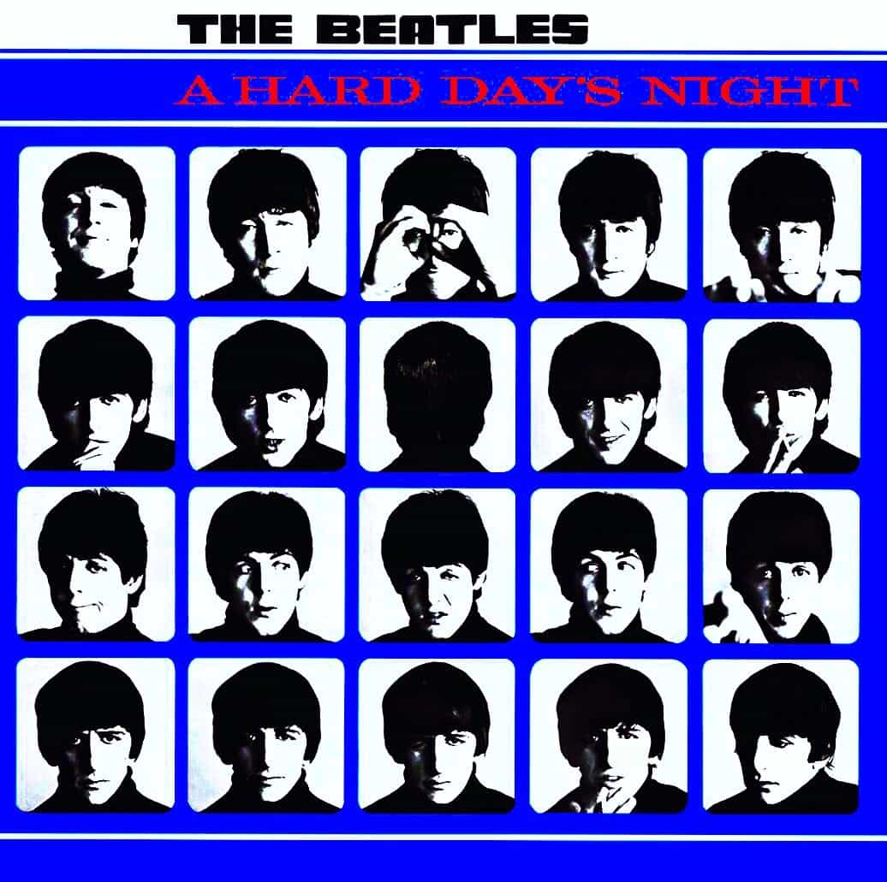

A Hard Day's Night
A Hard Day's Night has an awesome opener in the title track, a saccharine cut in If I Fell, and the catchy Can't Buy Me Love, but on the whole, the record has a lot of songs that blur together. The soundtrack to the group's first film, the album is a lot of filler for a movie that features the Beatles kind of just... running around? Important to their development and no doubt squarely in their meteoric rise, but far from their best material.
A Hard Day's Night - 2:34
I Should Have Known Better - 2:43
If I Fell - 2:19
I'm Happy Just To Dance With You - 1:56
And I Love Her - 2:29
Tell Me Why - 2:08
Can't Buy Me Love - 2:11
Any Time At All - 2:11
I'll Cry Instead - 1:45
Things We Said Today - 2:35
When I Get Home - 2:16
You Can't Do That - 2:34
I'll Be Back - 2:24